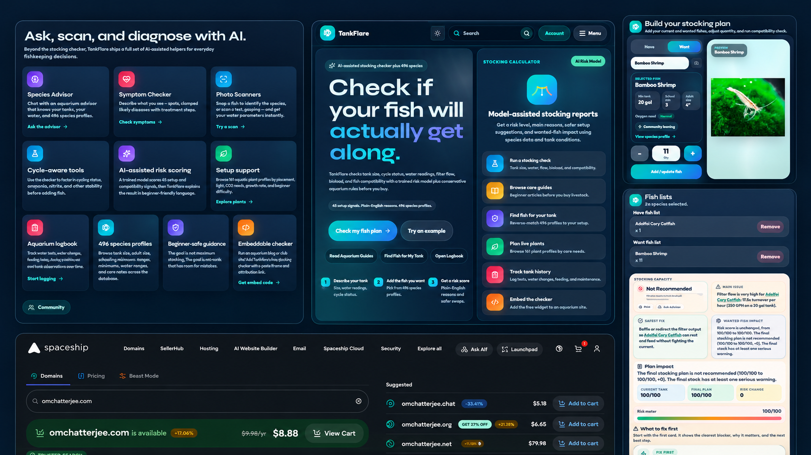
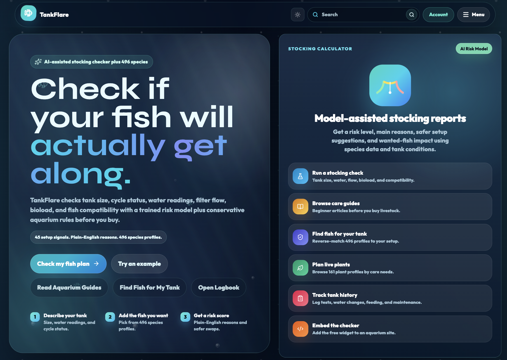
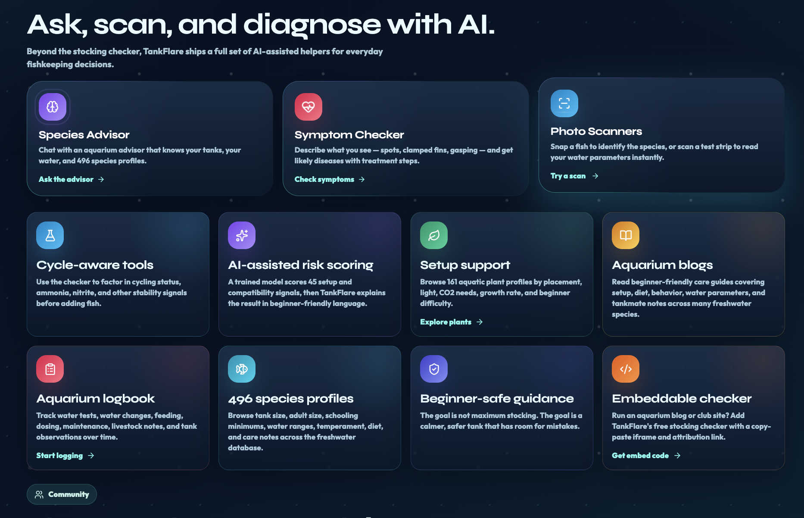
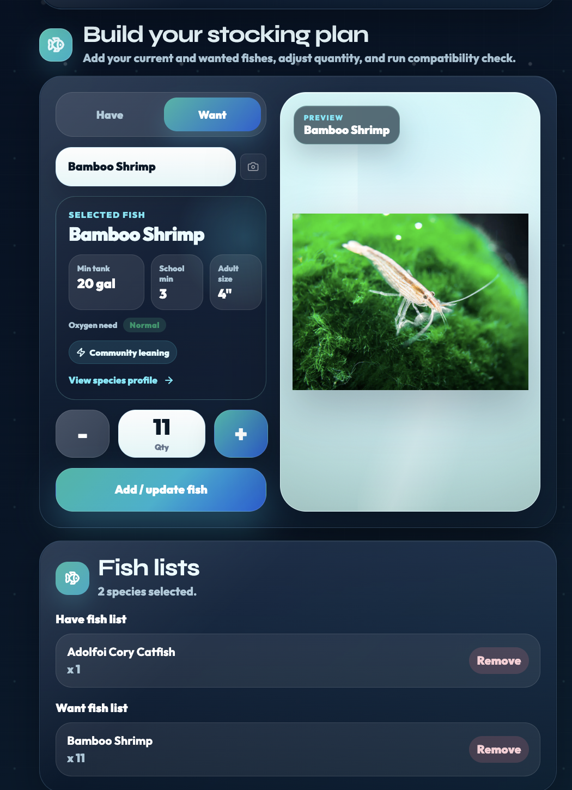

Fish ↔ Fish
Checks temperament, adult size, schooling needs, territory, swimming level, fin-nipping risk, and shared temperature, pH, and hardness ranges.
WEB • AI • AQUARISTICS
A website I designed and built that uses AI to answer the question every new fishkeeper gets wrong: will these fish, plants, and decorations actually live together?

OVERVIEW
Most aquarium mistakes are not made in the tank. They are made in the store aisle, minutes before checkout.
A beginner picks fish because they look good together, plants because they are green, and decor because it fits the theme. What they cannot see is that one fish needs soft acidic water while another needs hard alkaline water, that a plant needs more light than the tank will ever get, or that a beautiful piece of driftwood will slowly shift the pH in the wrong direction.
Compatibility information exists, but it is scattered across forums, care sheets, and contradictory blog posts. TankFlare pulls that reasoning into one place and applies it to the specific combination a person is actually considering.
HIGHLIGHTS
HOW IT WORKS
The user describes their tank: volume, water parameters, lighting, substrate, and current inhabitants, then adds what they are thinking of buying. TankFlare evaluates the combination on three fronts.
Checks temperament, adult size, schooling needs, territory, swimming level, fin-nipping risk, and shared temperature, pH, and hardness ranges.
Flags species that eat, uproot, or shred plants, then compares plant light and nutrient needs against the tank setup and suggests alternatives.
Reviews substrate safety, sharp edges, driftwood and rock effects on water chemistry, and the cover needed for shy fish to feel secure.
Instead of returning a bare verdict, the AI explains why a pairing fails and what to change: a different species, a larger tank, or an adjustment to the setup.
AI MODEL
TankFlare uses an ensemble model to turn aquarium details into a clear compatibility recommendation.
More than 15,000 data points were collected and organized using personal freshwater-aquarium knowledge. Specialist XGBoost and LightGBM models evaluate signals from the tank setup, water parameters, bioload, and the fish-and-decor combination. Each model contributes an independent opinion; a logistic regression model then combines those predictions into the final match result.
ARCHITECTURE
A layered application architecture keeps the web experience, persistent aquarium data, and trained compatibility models clearly separated.
Responsive web interface, dashboards, stocking checker, species pages, logbook, and AI-assisted tools.
Handles application logic, validation, data access, authentication-related operations, and communication with hosted AI services.
Stores aquarium data, user tank information, logs, species information, configuration, and application data.
The model is not trained during normal website use. TankFlare sends compatibility features to a hosted inference API, which loads the pre-trained model and returns a prediction.
Hosts and deploys the Next.js application and server-side endpoints.
Tracks anonymized usage, page activity, and product engagement.
EVIDENCE



REFLECTION
TankFlare taught me that the interesting part of an AI product is rarely the model. It is deciding what the model is allowed to say, what data it must reason from, and how to present an answer that a beginner will actually trust and act on.
It brought together my interest in aquariums and software development to help fishkeepers make better-informed decisions for the health of their fish.
{kind=link}
{kind=link}
{kind=link}
{kind=link}